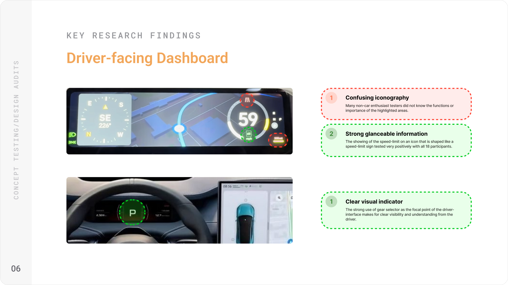
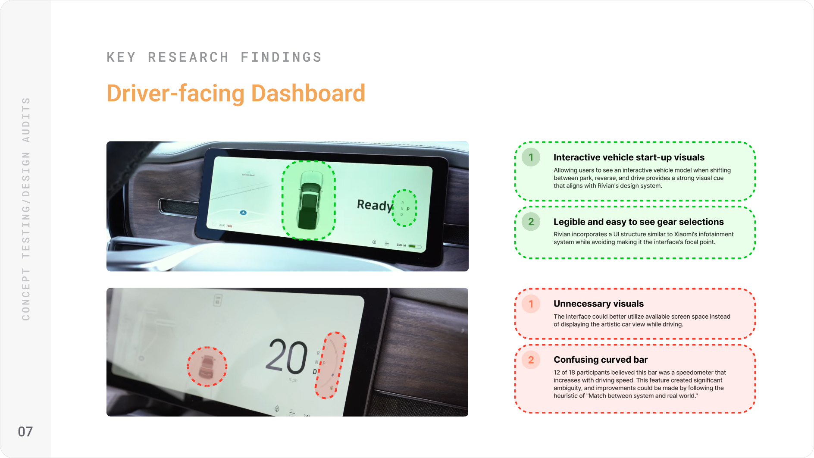

Reducing Incidents on the Road Through Intelligent Dashboard Design
THE PROBLEM
Every 36 seconds, someone is involved in a vehicle crash in the United States. As EVs replace traditional cars, touchscreen dashboards are becoming the primary control surface, and a significant new source of driver distraction.
Rivian's dashboard is genuinely innovative (as of 2025), but its information hierarchy creates dangerous moments of divided attention. Studies show that glancing away from the road for just 2 seconds doubles the chances of getting into a crash. The current layout can demand longer than that during driving scenarios.
Beyond safety, this is a business problem. Distraction-related incidents carry real consequences for an automaker: liability exposure, reputational damage, and insurance friction. A safe hands-off interface is of the utmost importance.
MY ROLE AND CONTEXT
This was a self-initiated redesign project. I identified the safety problem independently, conducted my own research, and designed and iterated on solutions. To pressure-test the work against real-world constraints, I reached out to four Rivian designers and developers to participate in testing sessions and provide feedback on design decisions, technical feasibility, and adherence to Rivian's established design system.
Timeline: 6 weeks Tools: Figma, Spline, After Effects
RESEARCH
Over the first four weeks I conducted 12 user interviews with EV drivers, audited the safety interaction patterns of Tesla, Xiaomi, Android Auto, and Apple CarPlay, and held two feedback sessions with Rivian design employees to understand technical and product constraints I wouldn't have access to otherwise.
Most findings confirmed what I suspected: drivers found proximity alerts too subtle, information hierarchy broke down during high-stress moments, and there was no clear visual priority system when multiple alerts competed for attention.
What I did not expect was how strongly drivers felt about agency versus automation in safety moments. Most assumed they would want control. In practice, they didn't.
One participant put it plainly:
"This proximity alert is important, but given its life-or-death nature, it should take over the whole screen automatically. I can't judge how close that vehicle really is when I'm about to be hit."
That reframed the project. I had been designing alerts that respected the existing interface. What was actually needed was a system willing to override it.


DESIGN DECISIONS
I worked through roughly 20 distinct interface directions before narrowing to three principles that held up across testing:
Contextual hierarchy. Secondary functions like audio and climate controls should step back automatically during safety-critical moments. The interface should know when a driver needs less, not more.
Familiar mental models. Drivers have years of muscle memory from Google Maps, Apple Maps, and Waze. Speed limit placement, exit timing, and hazard language should align with those patterns rather than reinvent them.
Perspective-based threat communication. A top-down aerial view communicates spatial relationships faster than a camera feed or icon. When proximity is the issue, showing relative position is more useful than showing raw footage.
Each of these came from testing failure, not initial planning. The aerial view, for example, replaced a popup camera window that tested poorly because drivers couldn't quickly interpret distance from a ground-level feed.
.avif)
.avif)
THE SOLUTION
Full-screen collision awareness
When another vehicle enters a critical proximity threshold, the dashboard transitions to a full aerial view showing the driver's vehicle relative to surrounding traffic. The transition is smooth but fast, designed to inform without startling.
In testing, all 4 Rivian design employees and 7 of 10 outside testers felt the aerial view communicated spatial threat more clearly than the original proximity icon. The remaining participant raised a valid concern about the transition speed in low-light conditions, which informed a refined animation timing.
Adaptive dashboard during navigation
The dashboard dynamically de-emphasizes non-essential elements when active navigation is running. Speedometer and directional guidance stay prominent. Climate and media controls reduce visually until the driver initiates them.
Testers consistently noted that this felt less like a feature and more like the interface was paying attention. That was the target.
OUTCOMES
This was a concept project with a small test group, so I want to be precise about what the results actually represent. These are qualitative signals from 5 design-informed testers, not a controlled study.
That said, the feedback was consistent: the aerial collision view was the highest-rated interaction across all sessions, and the adaptive hierarchy was described by three of five testers as something they would expect in a production-ready system.
The Rivian designers and developers who participated allowed me to realize one vital technical constraint I had not accounted for: sensor latency. Ensuring infotainment collision alerts could trigger in real time, in sync with the vehicle's proximity detection systems, would require close engineering collaboration before any of this moved toward production.
REFLECTION
If I ran this project again, I would involve the Rivian testers earlier. I brought them in during validation, but their knowledge of technical constraints would have been more useful during the direction-setting phase. Two of my major pivots could have happened in week two instead of week four.
I would also push harder on the low-light and glare scenarios. I tested primarily in controlled conditions. Real driving happens in rain, at night, and into the sun. The design holds up conceptually, but it needs environmental stress testing I did not get to.